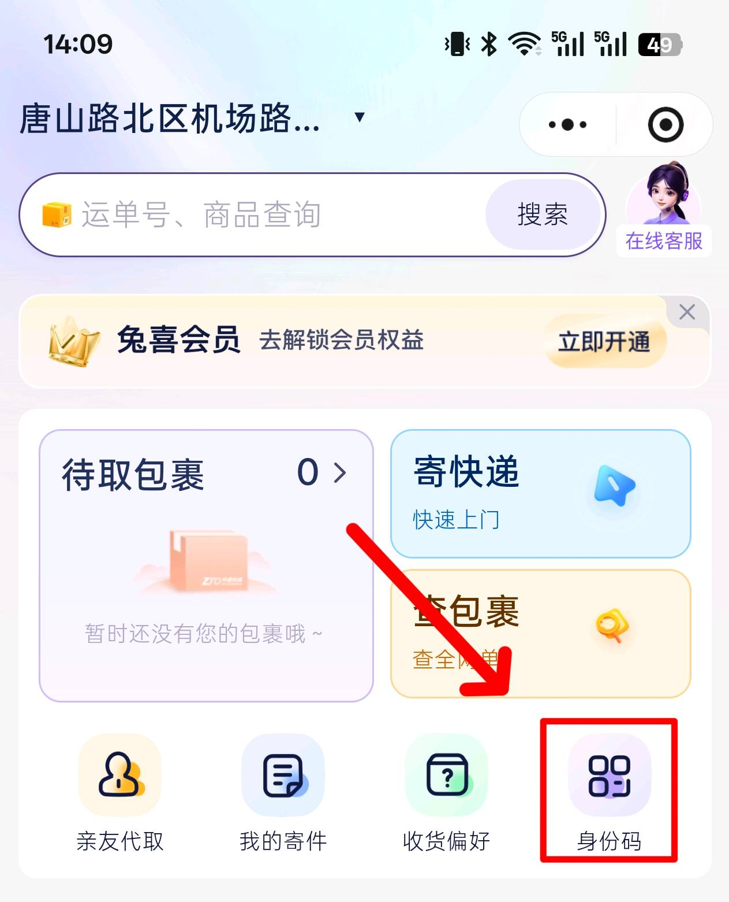
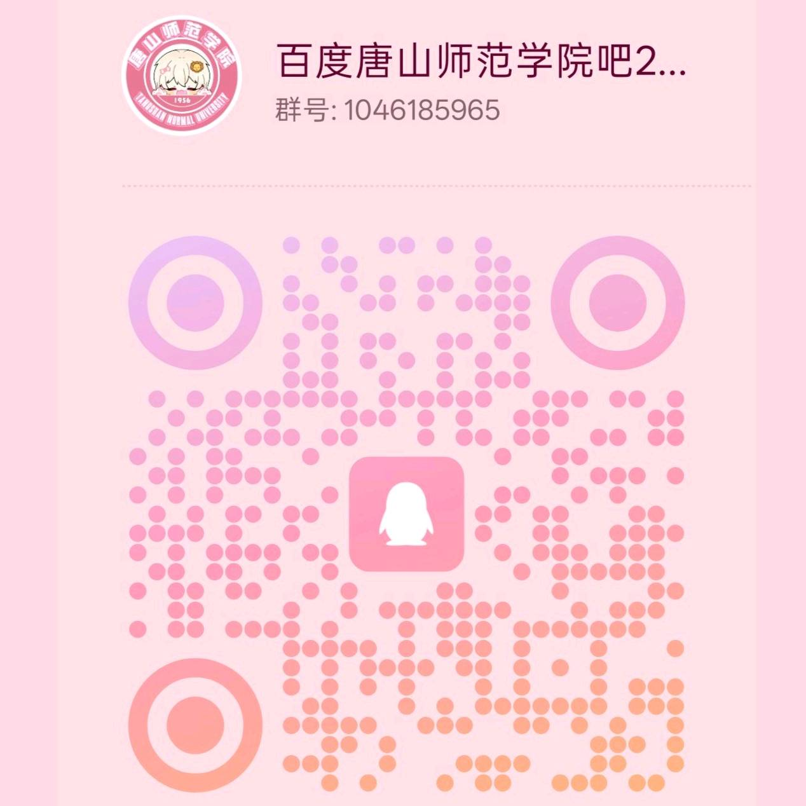

All packages at Daxuedao Campus are collected at off-campus stations. The three stations run independent systems with completely different pickup procedures. If freshmen don't sort this out in advance, it's easy to end up in the awkward situation of "the package arrived but you don't know how to get it." This guide lays out the receiving address, station locations, corresponding courier brands, and pickup procedures all at once—mail your bedding, clothing, and other bulky luggage before reporting in, and you can pick it up right after arriving on campus.
1. Precise Campus Receiving Address
Simply copy the address below—no need to fill in dorm building or class information:
Tangshan Normal University Daxuedao Campus, No. 156 Jianshe North Road, Lubei District, Tangshan City, Hebei Province
As long as the campus name is correct, the package will be delivered normally. On the first day of school, the campus is chaotic—especially near the package points—and many people won't be quite sure how to pick up packages, so pickup will be slow. If you need to mail items ahead of time, please consider this carefully. Also, the package points may close during winter and summer vacations when students leave campus, so if you really need to mail something, it's fine to do it a few days before the semester starts.
2. Package Station Location
Daxuedao Campus has no on-campus package point; all packages are collected at the basement level of the Baiyulan Hotel courtyard next to the school. The basement houses three independently operated stations whose systems do not interconnect:
- Cainiao Station: YTO, STO, J&T, Yunda, and other standard couriers;
- Tuxi Station: exclusively for ZTO Express;
- SF Station: SF Express, SF Express Priority, SF Fresh.
The three stations handle different courier brands and use different pickup methods, so be sure to go to the correct station as indicated by the SMS and do not mix them up.
3. Pickup Process at the Three Stations
1. Cainiao Station
Courier coverage: YTO, STO, J&T, Yunda, and other standard couriers (excluding ZTO), as well as Pinduoduo Grocery.
Pickup tool: Pinduoduo app.
Full process:
- After receiving the "package arrived" notification, open the Pinduoduo app;
- Scan the station's dedicated QR code to obtain your checkout identity code;
- Find your package on the shelf using the pickup code from the SMS;
- Scan both your Pinduoduo identity code and the package's shipping-label barcode at the self-service checkout machine;
- Once the machine shows "checkout successful," you may take the package.
2. Tuxi Station
Courier coverage: all ZTO Express packages on campus (ZTO only).
Pickup tool: the WeChat "Tuxi Life" mini-program.
Note for beginners: The Tuxi Life mini-program is mainly used to generate your pickup identity code; it does not directly display or sync all package information in the station, so there is no need to repeatedly check logistics in the mini-program. For pickup, you only need the dedicated pickup code received from Taobao, JD, or SMS.
Full process:
- Search for and open the "Tuxi Life" mini-program in WeChat, and bind your phone number in advance;
- Check your shopping app or SMS to get the pickup code for your ZTO package;
- Generate your dedicated identity/verification code within the mini-program;
- Go to the Tuxi Station self-service machine, show the mini-program verification code, and complete checkout together with your pickup code;
- Once verified, you may take the package.

3. SF Station
Courier coverage: SF Express, SF Express Priority, SF Fresh.
Pickup method: manual code reporting—no self-service machine or mini-program needed.
Go directly to the SF dedicated counter and tell the staff your SMS pickup code or the last four digits of your phone number; after verifying your information, the staff will manually locate and hand over your package.
4. Package Storage Notes
The off-campus stations do not enforce a strict free storage period and generally will not charge fees or return packages for short overstays. However, because the stations see heavy foot traffic and fast shelf turnover, it is recommended to collect your package as soon as possible after it arrives to avoid mix-ups, loss, or mistaken pickup.
5. Mailing Notes
The package stations are off-campus premises and are not subject to the school's on-campus mailing restrictions, so everyday items can be sent directly without worrying about being held or returned.
6. Shipping and Returns
All three stations in the basement of the Baiyulan Hotel support everyday personal shipping, online-shopping returns, and large luggage consignment, so your shipping needs can be handled in one stop off-campus, which is quite convenient.
7. Frequently Asked Questions
- Can packages be delivered to my dorm building? No. The whole school picks up uniformly at off-campus stations; door-to-door dorm delivery is not supported.
- Can the three stations' pickup methods be mixed? No. The three systems are completely independent; you must follow the dedicated process for the corresponding brand, and mixing them will not allow checkout.
- Are there any prohibited items for mailing? The stations are off-campus and have no on-campus prohibited-mailing restrictions, so all everyday items may be mailed.
TSNU Bar Mod Team
July 23, 2026
